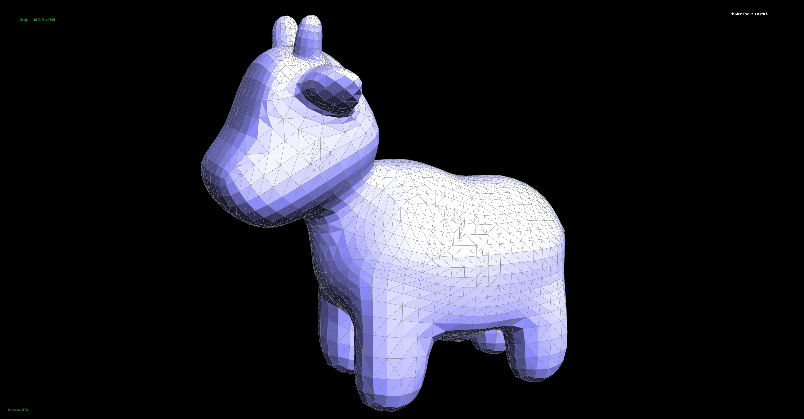

Overview
In this project, we implemented Bezier curves/surfaces and a variety of mesh operations, including edge flips and splits. In the first section, we wrote code that evaluated Bezier surfaces in 3D at a given parameter. By evaluating enough parameters we can draw the curve/surface on the screen. In the second section, we wrote code that flipped and split edges in a triangle mesh without boundaries. Finally, we utilized these operations to implement Loop subdivision, which upsamples a mesh and interpolates between triangles with a tendency to smooth out surfaces. Additionally, we implemented area weighted vertex normals to allow for smooth shading of rendered meshes.
We learned the importance of proper planning before implementation as well as the nuances of C++ iterators. By implementing the algorithms we learned, we have a more precise understanding of how they work.
Section I: Bezier Curves and Surfaces
Part 1: Bezier curves with 1D de Casteljau subdivision
De Casteljau's algorithm is used to evaluate points along a Bezier curve. Using the set of n ordered control points that define the curve, the algorithm performs linear interpolation (lerp) on each consecutive set of two points, generating n - 1 new points. Using the new points, the algorithm recursively performs lerps until a single point is left. This is the point on the Bezier curve. Each of these lerps is parametrized by a parameter t, where the first point is weighted by (1-t) and the second point is weighted by t. Drawing the entire curve requires evaluating the algorithm at all t: [0, 1].
Our implementation uses C++ 2D vectors to store points. To perform one step of the algorithm to go from n to n - 1 points, we perform n - 1 iterations over the given points, lerp between points i and i + 1, and add the new point onto a list (c++ vector). This list is returned.
|
|
|
|
|
|

|
|
Part 2: Bezier surfaces with separable 1D de Casteljau subdivision
Bezier surfaces are like Bezier curves, but the control points are indexed with a second dimension to create n*n control points. To evaluate a Bezier curve, we flatten a 1D set of control points by running de Casteljau's algorithm once to yield a single point. To evaluate a Bezier surface, we effectively "flatten" one axis by running de Casteljau's algorithm n times on each row or on each column to get a 1D set of n new control points, then flatten this remaining axis (which is effectively just a Bezier curve) to get the point on the surface. Because we have two dimensions, we have two parameters u: [0, 1] and v: [0, 1], one for each axis.
In our implementation, we have a 2D array of control points which contain n rows of n control points. To flatten the first axis, we run de Casteljau's algorithm n times with parameter u on the n rows, each containing n control points. This yields n new control points. We run de Casteljau's algorithm on these new control points with parameter v to yield the final point on the surface.
Section II: Sampling
Part 3: Average normals for half-edge meshes
We implemented area-weighted vertex normals by traversing the half-edges to loop over all neighboring non-boundary faces of a vertex, then summing together the normal vectors at each of these faces. We weight the normal vectors by the areas of their triangular faces, which we compute with Heron's formula by using the side-lengths of the faces. This final summed vector is normalized to a unit vector.|
|
|
Part 4: Half-edge flip
To implement edge flips, we first drew out a diagram for the edge-flip between two triangles. We labeled all the elements (edges, faces, half-edges, vertices) before flipping. Then we did the same for the diagram after flipping. In our code, we simply enumerated all the elements we needed to redirect pointers for, and reassigned their values. We found that when flipping edges, sometimes an edge would seem to disappear when flipped. And sometimes an edge flip results in unexpected shading on the involved triangles. The overall code changes were a bit verbose but much simpler than we expected. We didn't have an eventful debugging journey, though we were surprised by the syntax of just reassigning references returned from functions directly (e.g. h0->halfedge() = h1)|
|
|
Part 5: Half-edge split
We implemented edge splits similarly to how we implemented edge flips. We drew a diagram of the before/after elements for an edge split. This was more complicated because we had to add new elements, but overall it was the same approach of simply listing out all the relavant elements and reassigning their attributes. One of our team members unfortunately has atrocious handwriting, and also mislabeled a half-edge on the hand-drawn diagram we were referencing. The team member who implemented (but did not draw) the diagram occasionally misread labels. These factors likely did not aid in our debugging efforts.|
|
|
|
|

|
h6s. The bottom right one should read h8.Part 6: Loop subdivision for mesh upsampling
We followed the recommended algorithm for Loop subdivision. First, we computed the new positions for existing
vertices and stored them into its newPosition attribute. Their isNew attribute is set to
false.
Then, we computed the new positions for future new vertices at the midpoint of existing edges, storing this
in the edge's isNew attribute. While iterating over all edges, we also store the last edge we
encounter.
Then, we split all existing edges while copying over their newPosition attribute to the
new vertex. To do so, we iterate over all edges until we encounter the stored last edge from above. This is so we
do not accidentally split new edges.
Then, we flip edges using the isNew attribute of the edge and its two vertices. In our
implementation, the edge's isNew attribute determines eligibility for flipping and does not
correspond to newly created edge objects during edge splitting. This is why we used a stored last edge to prevent
infinite looping when splitting edges.
Finally, we copy over all vertices' newPositionss into their actual position.
Debugging this part mainly consisted of reading the code again and commenting out loops to isolate infinite looping, then making as few assumptions as possible about how the iterators work.
Loop subdivison on cube:
|
|
|
|
|
Notice that edges and corners are very smoothed out. The algorithm does not distinguish between sharp edges or approximated smooth edges and tends towards the latter when interpolating. Thus it performs better on objects already meant to be smooth. We can mitigate this effect on a cube by adding many faces to each face of the cube to give more "intention" to the original geometry:
|
|
|
To make the cube subdivide symmetrically, we can split each edge on each face. Initially, the cube mesh geometry was not symmetric, as a result of using minimal triangles to represent the cube. Not all vertices can have the same degree. Vertices with higher degree experience more smoothing because in the algorithm its neighbors would receive more weight. As a result, the eight original vertices are not repositioned symmetrically. By splitting each edge, each vertex has equal degree and the mesh becomes more symmetric, resulting in equally symmetric subdivisions and vertex repositioning.
|
|
|
|
|
|
Section III: Optional Extra Credit
If you are not participating in the optional mesh competition, don't worry about this section!